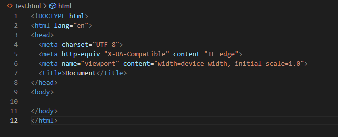

하이퍼 텍스트 마크업 언어는
웹 페이지 표시를 위해 개발된 지배적인 마크업 언어다.
또한, HTML은 제목, 단락, 목록 등과 같은 본문을 위한
구조적 의미를 나타내는 것뿐만 아니라
링크, 인용과 그 밖의 항목으로 구조적 문서를 만들 수 있는 방법을 제공한다.

HTML 문서의 기본 구조
본 HTML 문서가 작성된 버전이 무엇인지를 웹브라우저에게 알려주는 역할.
!doctype html 은 HTML5 를 의미한다.
이전 버전 지원 등에 대한 자세한 내용은 여기를 참고.
모든 HTML 문서는 <html> 태그 내에서 작성되어야 한다.
<html> 로 시작, </html> 로 끝.
자세한 내용은 여기를 참고.
검색 엔진과 브라우저를 지원하기 위한 언어 선언
w3schools.com에서는 아래와 같이 설명한다
You should always include the lang attribute inside the <html> tag,
to declare the language of the Web page.
This is meant to assist search engines and browsers:
대충 구글 번역기로 번역하면,
웹 페이지의 언어를 선언하려면 항상 태그 안에 속성을 포함해야 합니다 . 이는 검색 엔진 및 브라우저를 지원하기 위한 것입니다.
...라고 한다.
<head> 태그는 해당 문서의 메타데이터를 정의하며
<html> 태그와 <body> 태그 사이에 배치된다.
<body> 태그 내, 본문 내용을 꾸며주는 요소들을 이곳에 정의한다.
아래의 요소들이 <head> 내부에 들어갈 수 있다.
<body> 태그는 문서의 본문을 정의한다.
웹브라우저에 보이는 모든 내용들이 바로 이 <body> 태그에 들어간다고 보면 된다.
지금 이 페이지에서 보이는 모든 텍스트와 이미지도 모두 <body> 태그 내에 작성되어 있다.
<body> 태그 내부에 <input type="checkbox"> 을 작성하고 실행하면 된다.
2023.04.05 기준, 이 체크박스를 응용하는 방법은 아직 모른다....;;
체크박스 테스트